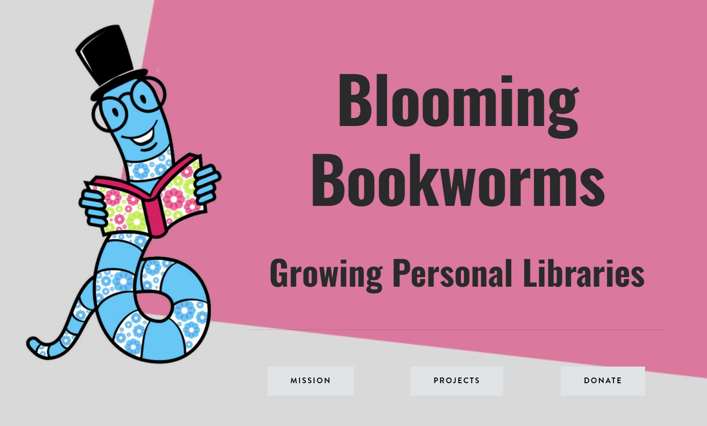

Portfolio
-
Bio Sensor

I am currently working on developing a novel biosensor for early cancer detection using photonic crystals. My area of research is to utilize deep learning and artifical intelligence to find the most viable design structure. The image above is a plot generated from our base case values. From here, I will be adapting it to fit more complex structures.
-
Blooming Bookworms
Blooming Bookworms is a nonprofit dedicated to giving books to children in low-income communities. My siblings and I started this nonprofit a few years ago in hopes of increasing literacy rates in low-income areas in St.Louis. As head of Research and Development, I studied the effect of books on young students' minds and created resources for both these students and potential donors on the importance of book ownership. I will be starting a branch in Terre Haute Indiana in the next year.
-
Joust Recreation
I worked to develop a recreation of the popular game Joust using Java and JavaSwing graphics. This project consisted of pair programming and debugging. This follows object-oriented principles.
-
Anti-Road-Rage
Created Anti-Road Rage, a spin off of the game Road Rush using pygame. As part of a group of 2, I pair programmed 6 out of 8 classes and developed special features of the game.